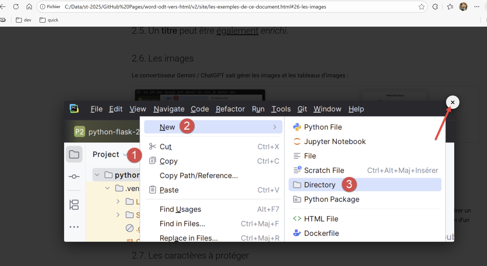

2. Les exemples de ce document
Je vais présenter maintenant des exemples des particularités de mes documents ODT / DOCX que le convertisseur Gemini / ChatGPT gère correctement. C’est ce propre document que nous proposerons à la conversion HTML au script de Gemini / ChatGPT. Nous verrons ce qu’il en fait.
2.1. Les listes
Le convertisseur Gemini / ChatGPT sait gérer les listes à puces et les listes numérotées même si elles sont imbriquées :
2.1.1. Listes à puces
- Élément 1 ;
- Élément 2 :
- Élément 3 ;
- Élément 3.1 ;
- Elément 3.1.1
- Elément 3.1.2
- Elément 3.1.2.1
- Elément 3.1.2.2
- Élément 3.2 ;
- Élément 3.1 ;
- Élément 4 ;
2.1.2. Listes numérotées
- Élément 1 ;
- Élément 2 ;
- Elément 2.1
- Elément 2.1.1
- Elément 2.1.1.1
- Elément 2.1.1.2
- Elément 2.1.2
- Elément 2.1.1
- Elément 2.2
- Elément 2.1
- Élément 3 ;
2.1.3. Listes mixtes 1
- Élément 1 ;
- Élément 2 :
- Élément 3 ;
- Élément 3.1 ;
- Elément 3.1.1
- Elément 3.1.2
- Elément 3.1.2.1
- Elément 3.1.2.2
- Élément 3.2 ;
- Élément 3.1 ;
- Élément 4 ;
2.1.4. Listes mixtes 2
- Élément 1 ;
- Élément 2 ;
- Elément 2.1
- Elément 2.1.1
- Elément 2.1.1.1
- Elément 2.1.1.2
- Elément 2.1.2
- Elément 2.1.1
- Elément 2.2
- Elément 2.1
- Élément 3 ;
2.2. Les blocs de code
Mes cours contiennent beaucoup de blocs de code. Ce sont souvent des codes enrichis (gras, couleurs des mots clés) par les IDE (Eclipse, PyCharm, WebStorm, Netbeans). Ces codes enrichis sont rendus à l’identique par le convertisseur.
Quand le code n’est pas enrichi (code venant du Bloc-Notes ou Notepad ou …), le convertisseur Gemini / ChatGPT le reconnaît (Java, C#, XML, HTML, …) à l’aide de mots clés du langage mis dans un fichier de configuration. Lorsqu’il reconnaît un langage il insère un marqueur (fence) pour MkDocs afin que celui-ci adapte la coloration syntaxique du code au langage utilisé dans le bloc de code.
2.2.1. Blocs de code enrichi (Eclipse, Visual Studio, ...)
Voici des blocs de code enrichis par différents IDE :
Java
package istia.st.spring.core;
import java.util.ArrayList;
import java.util.List;
import org.springframework.context.ApplicationContext;
import org.springframework.context.support.ClassPathXmlApplicationContext;
public class Demo01 {
@SuppressWarnings({ "unchecked", "resource" })
public static void main(String[] args) {
// récupération du contexte Spring
ApplicationContext ctx = new ClassPathXmlApplicationContext("config-01.xml");
// on récupère les beans
Personne p01 = ctx.getBean("personne_01", Personne.class);
Personne p02 = ctx.getBean("personne_02", Personne.class);
List<Personne> club = ctx.getBean("club", new ArrayList<Personne>().getClass());
Appartement appart01 = ctx.getBean(Appartement.class);
...
C#
using System;
namespace Chap1 {
class Impots {
static void Main(string[] args) {
// tableaux de données nécessaires au calcul de l'impôt
decimal[] limites = { 4962M, 8382M, 14753M, 23888M, 38868M, 47932M, 0M };
decimal[] coeffR = { 0M, 0.068M, 0.191M, 0.283M, 0.374M, 0.426M, 0.481M };
decimal[] coeffN = { 0M, 291.09M, 1322.92M, 2668.39M, 4846.98M, 6883.66M, 9505.54M };
// on récupère le statut marital
bool OK = false;
string reponse = null;
while (!OK) {
Console.Write("Etes-vous marié(e) (O/N) ? ");
reponse = Console.ReadLine().Trim().ToLower();
if (reponse != "o" && reponse != "n")
Console.Error.WriteLine("Réponse incorrecte. Recommencez");
else OK = true;
}//while
bool marie = reponse == "o";
...
Python
# ----------------------------------
def affiche(chaine):
# affiche chaine
print("chaine=%s" % chaine)
# ----------------------------------
def affiche_type(variable):
# affiche le type de variable
print("type[%s]=%s" % (variable, type(variable)))
# ----------------------------------
def f1(param):
# ajoute 10 à param
return param + 10
# ----------------------------------
def f2():
# rend un tuple de 3 valeurs
return "un", 0, 100
# -------------------------------- programme principal ------------------------------------
...
PHP
<?php
// types stricts pour les paramètres de fonctions
declare(strict_types=1);
// constantes globales
define("PLAFOND_QF_DEMI_PART", 1551);
define("PLAFOND_REVENUS_CELIBATAIRE_POUR_REDUCTION", 21037);
define("PLAFOND_REVENUS_COUPLE_POUR_REDUCTION", 42074);
define("VALEUR_REDUC_DEMI_PART", 3797);
define("PLAFOND_DECOTE_CELIBATAIRE", 1196);
define("PLAFOND_DECOTE_COUPLE", 1970);
define("PLAFOND_IMPOT_COUPLE_POUR_DECOTE", 2627);
define("PLAFOND_IMPOT_CELIBATAIRE_POUR_DECOTE", 1595);
define("ABATTEMENT_DIXPOURCENT_MAX", 12502);
define("ABATTEMENT_DIXPOURCENT_MIN", 437);
// définition des constantes locales
$DATA = "taxpayersdata.txt";
$RESULTATS = "resultats.txt";
$limites = array(9964, 27519, 73779, 156244, 0);
$coeffR = array(0, 0.14, 0.3, 0.41, 0.45);
$coeffN = array(0, 1394.96, 5798, 13913.69, 20163.45);
// lecture des données
$data = fopen($DATA, "r");
if (!$data) {
print "Impossible d'ouvrir en lecture le fichier des données [$DATA]\n";
exit;
}
...
ECMAScript
'use strict';
// ceci est un commentaire
// constante
const nom = "dupont";
// un affichage écran
console.log("nom : ", nom);
// un tableau avec des éléments de type différent
const tableau = ["un", "deux", 3, 4];
// son nombre d'éléments
let n = tableau.length;
// une boucle
for (let i = 0; i < n; i++) {
console.log("tableau[", i, "] = ", tableau[i]);
}
// initialisation de 2 variables avec le contenu d'un tableau
let [chaine1, chaine2] = ["chaine1", "chaine2"];
// concaténation des 2 chaînes
const chaine3 = chaine1 + chaine2;
// affichage résultat
console.log([chaine1, chaine2, chaine3]);
...
VBScript
' calcul de l'impôt d'un contribuable
' le programme doit être appelé avec trois paramètres : marié enfants salaire
' marié : caractère O si marié, N si non marié
' enfants : nombre d'enfants
' salaire : salaire annuel sans les centimes
' déclaration obligatoire des variables
Option Explicit
Dim erreur
' on récupère les arguments en vérifiant leur validité
Dim marie, enfants, salaire
erreur=getArguments(marie,enfants,salaire)
' erreur ?
If erreur(0)<>0 Then wscript.echo erreur(1) : wscript.quit erreur(0)
' on récupère les données nécessaires au calcul de l'impôt
Dim limites, coeffR, coeffN
erreur=getData(limites,coeffR,coeffN)
' erreur ?
If erreur(0)<>0 Then wscript.echo erreur(1) : wscript.quit 5
' on affiche le résultat
wscript.echo "impôt=" & calculerImpot(marie,enfants,salaire,limites,coeffR,coeffN)
' on quitte sans erreur
wscript.quit 0
XML
<?xml version="1.0" encoding="utf-8" ?>
<configuration>
<configSections>
<sectionGroup name="spring">
<section name="context" type="Spring.Context.Support.ContextHandler, Spring.Core" />
<section name="objects" type="Spring.Context.Support.DefaultSectionHandler, Spring.Core" />
</sectionGroup>
</configSections>
<spring>
<context>
<resource uri="config://spring/objects" />
</context>
<objects xmlns="http://www.springframework.net">
<object name="dao" type="Dao.DataBaseImpot, ImpotsV7-dao">
<constructor-arg index="0" value="MySql.Data.MySqlClient"/>
<constructor-arg index="1" value="Server=localhost;Database=bdimpots;Uid=admimpots;Pwd=mdpimpots;"/>
<constructor-arg index="2" value="select limite, coeffr, coeffn from tranches"/>
</object>
<object name="metier" type="Metier.ImpotMetier, ImpotsV7-metier">
<constructor-arg index="0" ref="dao"/>
</object>
</objects>
</spring>
</configuration>
2.2.2. Blocs de code brut (plain text)
Voici des exemples de code brut :
Résultats d’exécution
On notera que le code ne commence pas avec la ligne n° 1.
Ce cas a nécessité des dizaines d’itérations. Le convertisseur ne trouvait jamais le numéro de la première ligne de code. Finalement j’ai demandé à Gemini comment formater le bloc de code pour qu’il le reconnaisse. Voici ce qu’il m’a répondu :

J’ai suivi cette démarche et ça a marché. Moi j’utilisais la méthode via l’icône de liste (Personnaliser). Donc on peut être amené à modifier certains éléments du Document ODT / DOCX pour obtenir ce qu’on veut.
Le convertisseur sait gérer les blocs de code non numérotés.
Voici les mêmes exemples que dans le paragraphe 2.2.1 mais non enrichis. Ce sont alors les mots clés du fichier de configuration qui vont guider le convertisseur vers le bon langage.
Java
C#
Python
PHP
ECMAScript
VBScript
XML
HTML
2.3. Les liens
Le convertisseur Gemini / ChatGPT sait conserver les liens externes du Document ODT / DOCX. Par exemple Gemini 3 ou [Générer un script Python avec des outils d’IA].
Il sait gérer un lien vers un chapitre Lien vers un chapitre
Un renvoi vers un chapitre : 2.1.1.
Un renvoi vers un repère de texte qui précède : Gemini 3
Un renvoi vers un repère de texte qui suit : GitHub
2.4. L’enrichissement de texte
Le convertisseur sait gérer le gras, l’italique, le souligné et le surlignage. Il respecte la couleur du surlignage.
Un texte avec des mots en gras, en italiques, soulignés ou surlignés ou surlignés ou surlignés.
C’est vrai également pour les liens : [Générer un script Python avec des outils d’IA].
Le convertisseur gère également la couleur des caractères.
Il gère également les bordures supérieure et inférieure des paragraphes.
2.5. Un titre peut être également enrichi.
2.6. Les images
Le convertisseur Gemini / ChatGPT sait gérer les images et les tableaux d’images :
 |  |

Dans les documents ODT il est fréquent d’avoir des dessins. Malgré des dizaines de tentatives, Gemini n’a pas réussi à générer un script qui générerait l’image (comme une copie d’écran) du dessin. Ainsi ci-dessus, l’image 5 est la copie d’écran d’un dessin d’un document ODT.
Toutes les images sont cliquables pour être agrandies. Si ci-dessus on clique sur l’image [1-3], on obtient l’agrandissement suivant :
|  |
2.7. Les caractères à protéger
Un site MkDocs1 a des pages dont le contenu n’est pas du HTML mais du MarkDown. Si le Document ODT / DOCX contient des caractères qui existent en MarkDown, ils risquent d’être interprétés par MkDocs et donc ne pas avoir le rendu attendu. Voici deux exemples :
L’astérisque * a une signification MarkDown. La ligne suivante peut être alors mal interprétée :
L'impôt I est alors égal à 0.15*R – 2072.5*nbParts.
Un autre exemple est lorsque vous voulez insérer un bloc de code MarkDown dans votre document comme celui-ci :
2.8. Les tableaux
Un tableau peut contenir différents contenus :
1 | 2 |  | |
3 | 4 |  | |
2.9. Les notes de bas de page
Le convertisseur Gemini2 / ChatGPT gère les notes de bas de page. Voici une autre note3 de bas de page.
-
La note de bas de page ↩